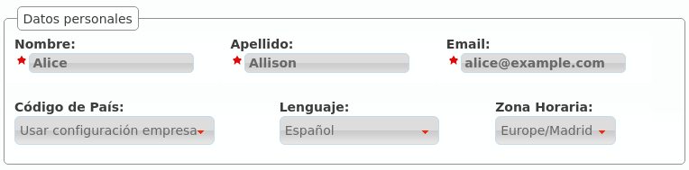
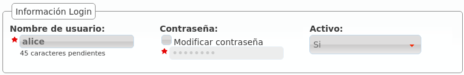
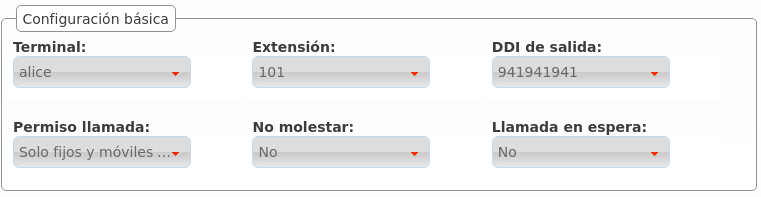
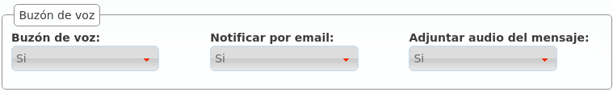
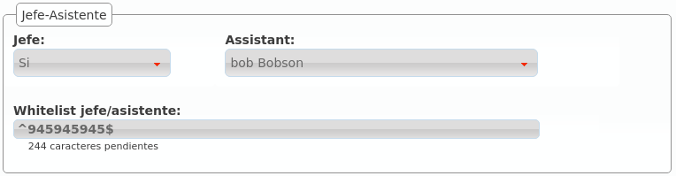

Usuarios¶
El proceso de instalación nos creó a Alice y a Bob, y esto nos permitió ahorrar mucho tiempo a la hora de conseguir que se llamarán entre ellos.
También nos permitió pasar un poco de puntillas por la sección de Usuarios, que ahora pasamos a definir en profundidad.
Para ello, nada mejor que editar el usuario Alice y describir cada campo del mismo:
- Nombre
- Se utilizará para referenciar al usuario en múltiples ámbitos, incluyendo el nombre que se presenta en llamadas internas.
- Apellidos
- Irá junto con el Nombre en casi todos los casos.
- Dirección de correo electrónico del usuario al que se enviarán los mensajes de voz del buzón.
- Información de Login
- Sub-bloque que define las credenciales de acceso al portal de usuario y si éste está activo o no.
Datos personales¶
Credenciales portal de usuario¶
Configuración básica¶
Buzón de voz¶
Jefe-Asistente¶
Pertenencia a grupos¶